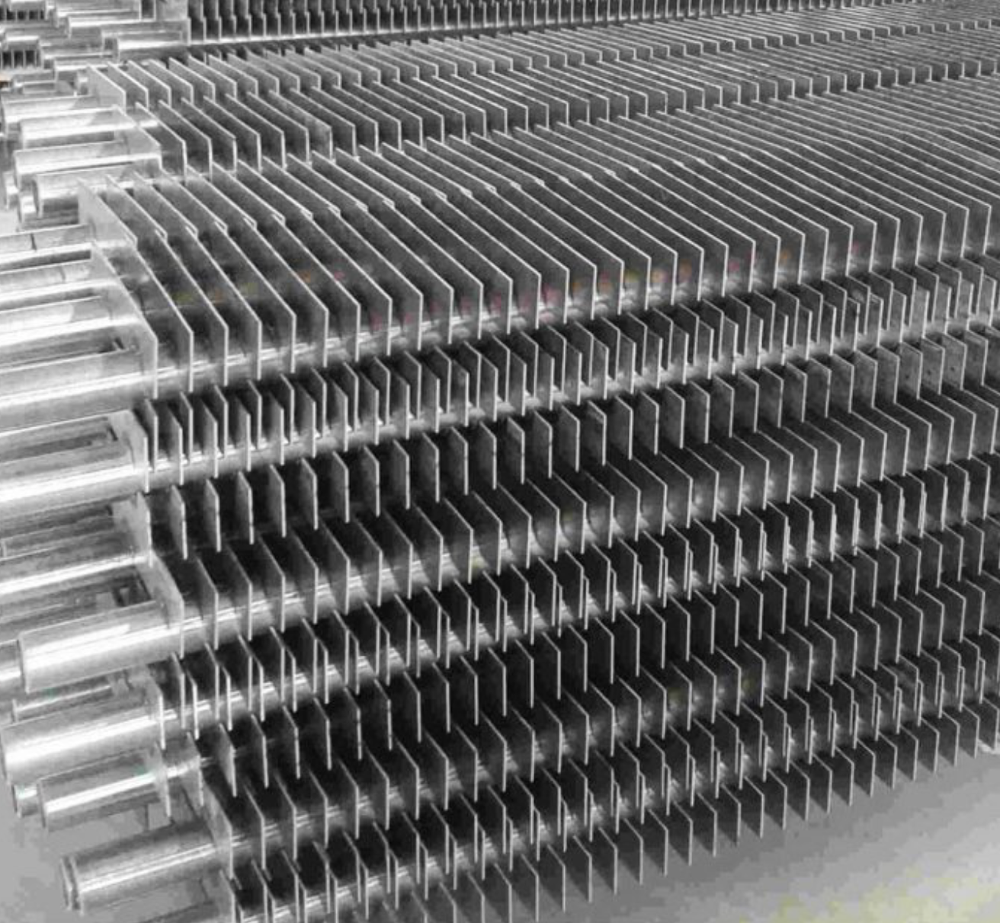

My research bridges mechanical and biomedical sciences. With a background in Mechanical Engineering, I have a strong interest in thermal and fluid flow phenomena and their practical applications. I have conducted both experimental and numerical studies focused on improving heat transfer and enhancing the efficiency of heat transfer devices. This work involved extensive coding and simulation to analyze complex thermal and fluid flow behaviors.
In addition to this, I am passionate about coding and have applied these skills to simulate physiological phenomena. For example, I developed a computational model that simulates the growth of solid tumors under different conditions and scenarios.
The intersection of thermal-fluid mechanics, biomedical applications, and computational modeling forms the foundation of my PhD research. Specifically, I use the principles of thermodynamics to verify and validate numerical models of physiological systems, ensuring their accuracy and fidelity to real biological processes. As part of this work, I am currently developing a Python package designed to automate the verification of these numerical models, making the process more efficient and accessible to researchers.
Verification of numerical models
Verification is the process of determining if we are doing the right job based on our plan and concept. We are checking to see if we are missing any points and if we are doing the right job. As it is seen in the picture left to this paragraph, in the verification step, we are checking to see if we are making two sleeves or not (based on the plan), the size is the correct one or not, the color of the raw material is blue or not, and if we are missing any buttons? Just to note that we haven't tested and compared it with the real world yet. If we follow the construction rules correct, then we will be able to compare it to the real world.
Mariner 1 catastrophe
Now, I will give you an example of system failure due to an inadvertent error that resulted in mission failure!!
Mariner 1, built to conduct the first American planetary flyby of Venus, was the first spacecraft of NASA's interplanetary Mariner program. Developed by Jet Propulsion Laboratory, and originally planned to be a purpose-built probe launched in the summer of 1962, Mariner 1's design was changed when the Centaur proved unavailable at that early date. Mariner 1 (and its sibling spacecraft, Mariner 2), were then adapted from the lighter Ranger lunar spacecraft. Mariner 1 carried out a suite of experiments to determine the temperature of Venus as well as to measure magnetic fields and charged particles near the planet and in interplanetary space.
Mariner 1 was launched by an Atlas-Agena rocket from Cape Canaveral's Pad 12 on July 22, 1962. Shortly after liftoff, errors in communication between the rocket and its ground-based guidance systems caused the rocket to veer off course, and it had to be destroyed by range safety. The errors were traced to a mistake in the hand-written guidance equations specification which were then codified in the computer program.
If they had a verification tool to verify the correctness of their model automatically, it would never have happened!!
Biological systems are a part of this universe and so these systems must obey the laws of physics. Anything in this universe cannot fall beyond the laws of physics and thermodynamics. As engineers, we use our knowledge from different engineering fields to understand the human body. Then, we can make human models and do tests on that rather than a real human or an animal with ethical issues and high costs. But something is very important here. How do we ensure that our model will work fine without having much information on the system being modeled?
Here comes the verification process. It is the process of testing the model's validity before it is put to work. This is done by verifying the correctness of the model based on the laws of physics and thermodynamics.
Other than that, we know that the human body is a complex system comprising many parts from nanoscale to macroscale working together. Knowledge of Mechanical and Electrical Engineering, as well as Chemistry is required in most systems of human bodies. A tool is required to help scientists test their models when they try different hypotheses to find new formulations to unravel the unknowns of human body. I have developed a tool using Python that can help scientists achieve this goal just by a simple command in Python.
Refer to the following paper for more information:
Numerical and experimental simulation of air flow over oval finned tubes used in heat exchangers

A heat exchanger is a device that facilitates the process of heat exchange between two fluids that are at different temperatures. Heat exchangers are used in both cooling and heating processes. Heat exchangers are used in many engineering applications, such as refrigeration, heating and air conditioning systems, power plants, chemical processing systems, food processing systems, automobile radiators, and waste heat recovery units. Air preheaters, economizers, evaporators, superheaters, condensers, and cooling towers used in a power plant are a few examples of heat exchangers. The classic example of a heat exchanger can be found in an internal combustion engine in which a circulating fluid known as engine coolant flows through radiator coils and air flows past the coils, which cools the coolant and heats the incoming air.
In my papers on oval finned tubes, at first using a finned oval tube, we developed a computer model to study the effect of fin spacing and height on the efficiency of the tube in transferring heat. We used Solidworks to make the 3 dimensional object and studied it in Ansys Fluent. Later, we studied how finned oval tube bundles perform in cross-flow heat exchangers, offering a promising alternative to traditional circular tubes. Using thermal imaging and smoke visualization techniques, we analyzed how variations in tube spacing and arrangement affect flow patterns, heat transfer, and pressure drop. We identified three distinct flow regimes and showed that smaller tube pitches significantly improve thermal performance—boosting the Nusselt number by up to 25%. Our findings suggest that finned oval tubes are particularly efficient at low and high Reynolds numbers, making them ideal for energy-conscious industrial applications.
Refer to the following papers for more information:
Flow behaviors demonstrated for three aforementioned groups
Simulation of a solid tumor
Cancer is the second leading cause of death in the western countries after cardiovascular diseases. Therefore, it is an important and interesting topic in disease treatment studies. It heavily requires coding to simulate the growth of the tumor with its unique vascular network.
As shown in the image, tumors behave remarkably intelligently within tissue, evading various treatments and drugs. They are so adaptive that they exploit the body's own cellular mechanisms for their benefit.
It is well known that cancerous cells proliferate faster than normal cells. As a result, they require more nutrients. However, the existing vascular network is often insufficient to supply these increased demands. To overcome this, tumor cells secrete signaling molecules—typically involved in wound healing and tissue repair—to stimulate the formation of new blood vessels (a process known as angiogenesis).
These new vessels sprout from existing ones and grow toward the tumor, forming an expanded vascular network. This enables the tumor to receive more nutrients and oxygen, supporting its continued growth. Over time, the tumor can become large enough to invade surrounding tissues and enter larger blood vessels, facilitating metastasis to other parts of the body.
I gain much interest insimulation of this behaviour in tumors. Henceforth, I developed a code using C++ to study tumor size and capability to grow at different scenarios inside a tissue. Please see below the result of my simulation.
Refer to the following papers for more information:
Simulation of the growth of vessels towards a solid tumor
Heat channels with elastic walls
Inspired by nature and human anatomy, elastic walls are suggested to be used in heat-transferring channels. Inducing turbulence in fluid flows is considered a way to increase heat transfer since hot and cold fluids can be mixed quickly instead of conducting heat by diffusion. Therefore, the idea of using elastic walls in channels has been proposed to induce turbulence in the flow when required. The wall can be kept still and rigid in normal conditions and can be deformed to the desired shape when required.
Comsol Multiphysics is a powerful simulation tool that uses Finite Element Method to solve the mathematial equations governing physical phenomena. This makes it a powerful tool in studying coupled simulation of a moving wall and fluid flow. Henceforth, we used Comsol to study the impacts of an elastic wall embedded in a channel on heat transfer. The upper wall of the channel is considered to be artificially roughened and heated. The bottom wall had an ealstic wall that could move inside to narrow down the passage to speed up flow movement in the area and increase heat transfer when needed. This method can be used in solar pannels to increase heat transfer. It can also be used in important devices to avoid system failure in emergency situations when rapid cooling is required other than normal conditions.
Refer to the following paper for more information:
Effect of the elastic wall on flow perturbation and incrase of heat transfer
A counterflow wet cooling tower
Counterflow wet cooling towers are used in power plants and large companies to cool down the working fluid, usually water. Many devices in plants produce heat as they work e.g., reactors, turbines, and compressors. They are required to be maintained at a fixed temperature range to work properly. Mostly water is used to cool down the device. This heated water needs to be cooled down to be able to do the cooling job again. Therefore, cooling towers are used to do this job and reject the waste heat in the atmosphere. Two types of cooling towers are mostly used: wet and dry cooling towers. In wet cooling towers, there is direct contact between water and the atmospheric air. Tower efficiency is higher in these cooling towers but some part of the water needs to be evaporated to cool down the remaining water. In dry cooling towers, there is no direct contact between water and air since the water passes through tubes and the air cools down the water by contacting the tube. Consequently, cooling towers are a necessary part of industrial plants. Therefore, studying their efficiency and its increase is of great importance to the industry.
I have done experimental research on a laboratory-scale counterflow wet cooling tower. We have used a new type of filling, which is used to increase the contact between air and water flowing through the tower. the tower's energy and exergy efficiency have been calculated based on the experimental measurements. A computer code has been developed to evaluate the tower's efficiency. Optimum working conditions have been suggested for the tower based on the second law of thermodynamics.
Refer to the following paper for more information: